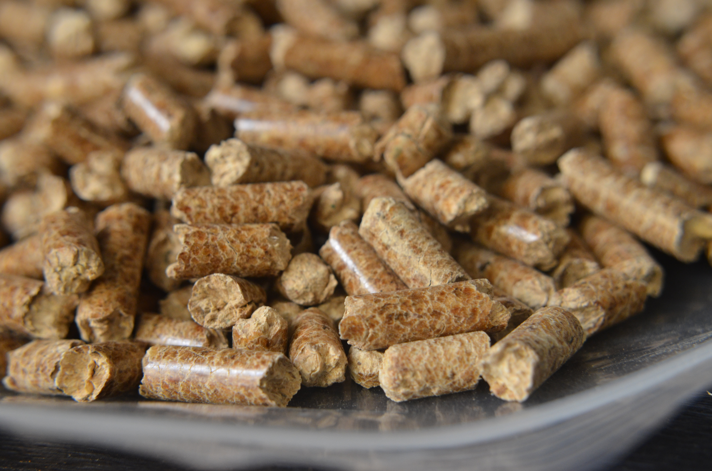
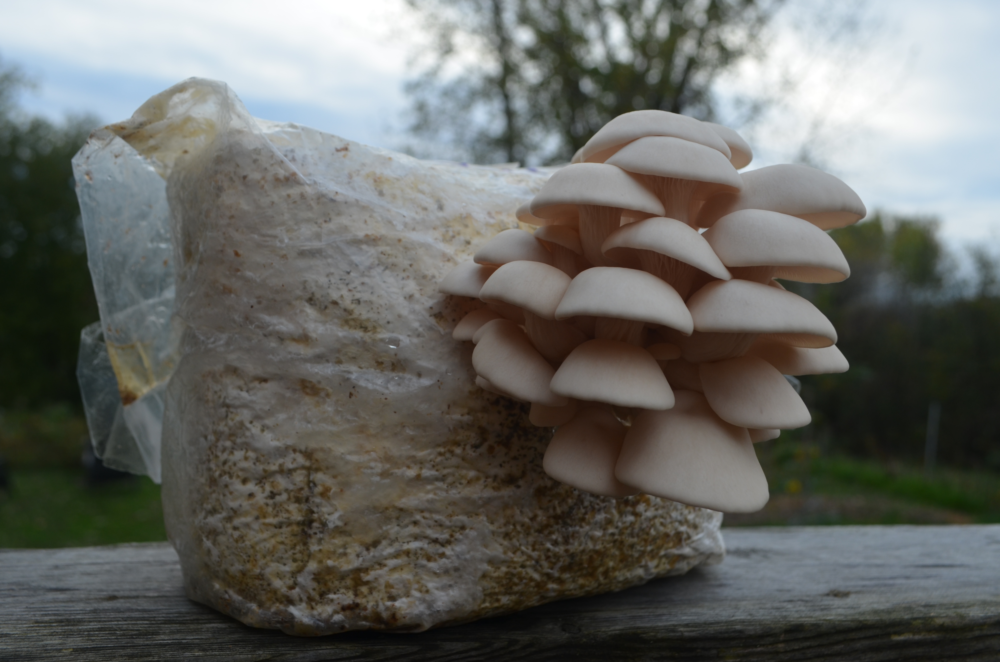
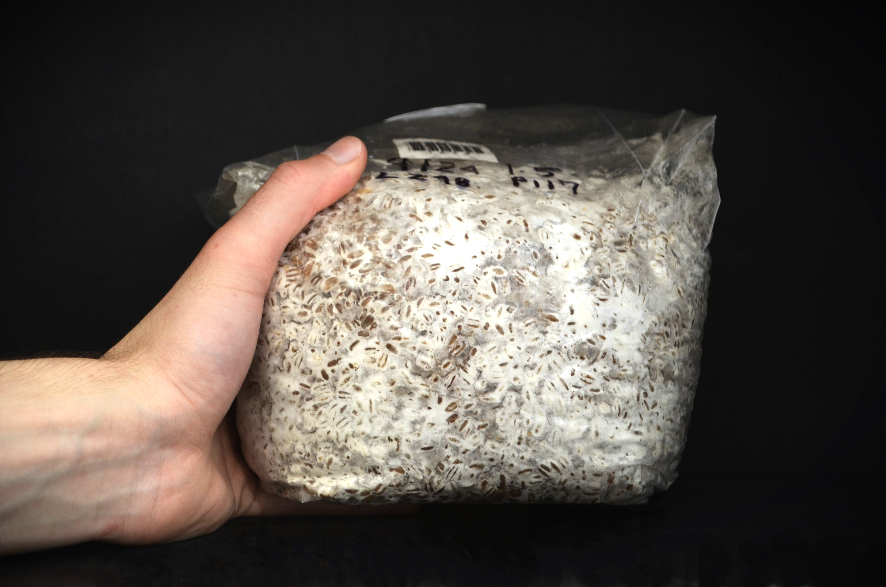
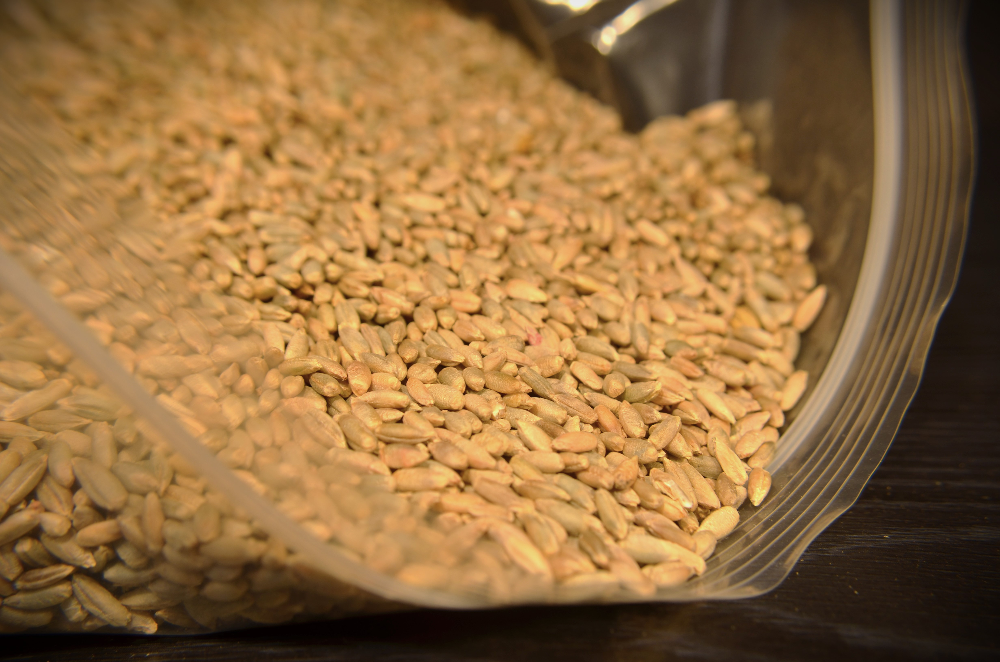
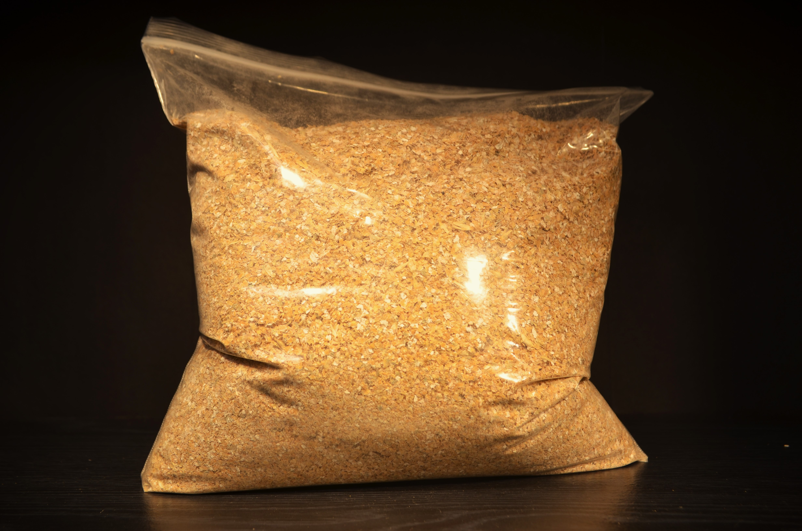
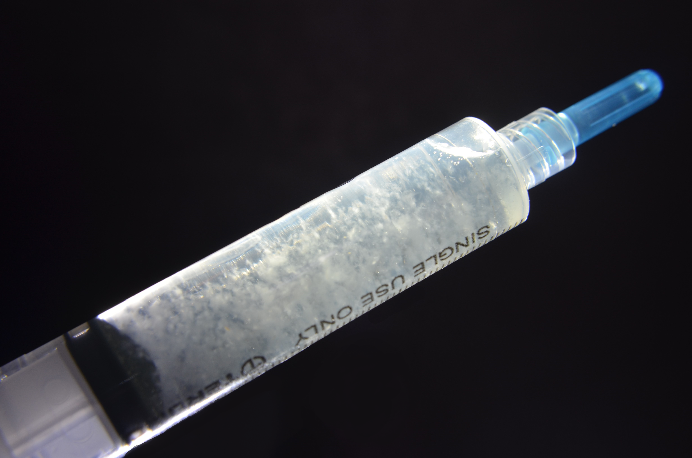
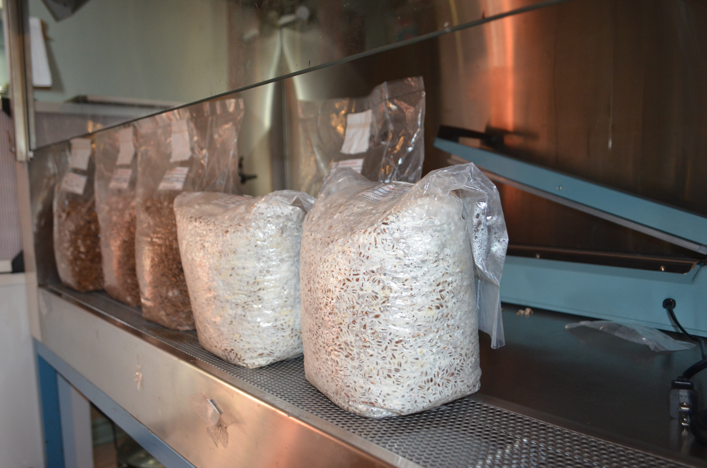
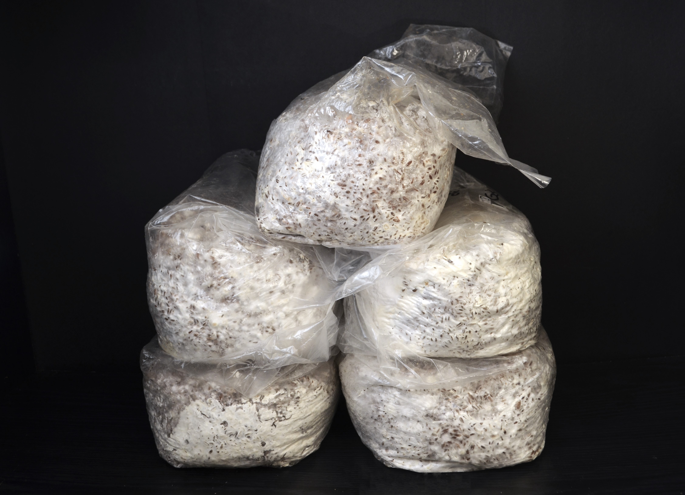

Bienvenu sur notre boutique!
Promotions en cours et produits vedettes.

Mycélium sur grain
20$/sac de 2kg
Notre mycélium sur grain est idéal pour démarrer vos propres substrats ou ensemencer de nouveaux lots. Colonisé à partir de souches vigoureuses, il assure une reprise rapide et uniforme..

Mycélium en vrac
1$/kg
Un substrat déjà colonisé par le mycélium, prêt à être installé directement dans votre jardin ou vos plates-bandes. Il suffit de l’étendre sur des copeaux de bois humides ou de la matière organique, puis de maintenir l’humidité.
Tout nos produits
Mycélium sur grain
20$
Notre mycélium sur grain est idéal pour démarrer vos propres substrats ou ensemencer de nouveaux lots. Colonisé à partir de souches vigoureuses, il assure une reprise rapide et uniforme.

Granules de bois franc
0.75$/kg
Riches en lignine et en cellulose, elles reproduisent les conditions naturelles de croissance des espèces ligneuses comme le pleurote ou la strophaire.

Mycélium en vrac
1$/kg
Un substrat déjà colonisé par le mycélium, prêt à être installé directement dans votre jardin ou vos plates-bandes. Il suffit de l’étendre sur des copeaux de bois humides ou de la matière organique, puis de maintenir l’humidité.
En savoir plus
Bloc de fructification
20$
Conçu pour les producteurs et passionnés, ce bloc contient un substrat entièrement colonisé et équilibré en humidité. Il ne reste qu’à déclencher la fructification pour obtenir des récoltes rapides et abondantes.

Mycélium sur grain (petit format)
15$
Notre mycélium sur grain est idéal pour démarrer vos propres substrats ou ensemencer de nouveaux lots. Colonisé à partir de souches vigoureuses, il assure une reprise rapide et uniforme.

Grain de seigle
1.5$/kg
Le grain de seigle est un substrat nutritif, parfait pour la production de mycélium. Sa sa richesse naturelle en nutriments favorisent une colonisation rapide et uniforme.

Son de blé
1.5$/kg
Ajouté en petite quantité à la paille, aux copeaux ou aux granules de bois, il stimule la croissance du mycélium et augmente le rendement des fructifications.

Culture liquide
15$
La culture liquide contient du mycélium vivant suspendu dans une solution nutritive stérile. Elle permet d’inoculer facilement des grains ou des substrats tout en assurant une croissance homogène et rapide.
Nos ensembles
Combinez et économisez
Le jardinier

Le jardinier regroupe tout le nécessaire pour lancer une culture de champignons directement au jardin. Il comprend du mycélium en vrac, des granules de bois francs, du son de blé et les instructions de préparation. Pensé pour les jardiniers curieux, cet ensemble favorise à la fois la production de champignons comestibles et l’enrichissement naturel du sol.
L’apprenti myciculteur
L’apprenti myciculteur est un ensemble d’initiation complet pour apprendre les bases de la myciculture à la maison. Il comprend tout le matériel nécessaire : culture liquide, mycélium sur grain, substrat et guide d’utilisation. Idéal pour comprendre chaque étape du cycle, de l’inoculation jusqu’à la fructification.

